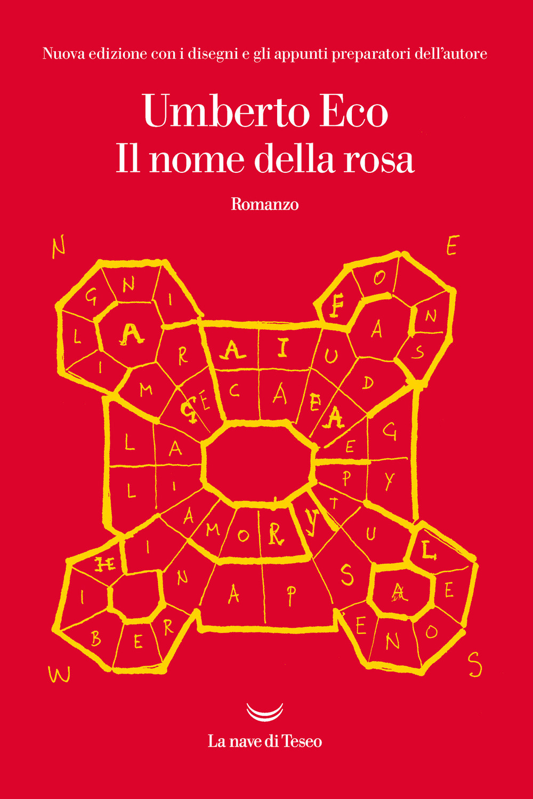
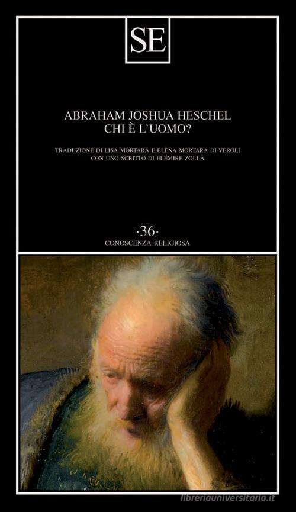
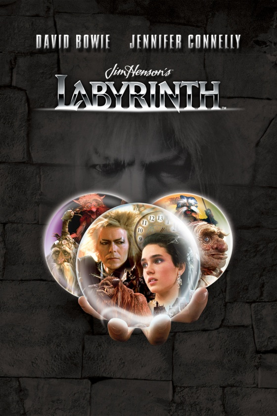
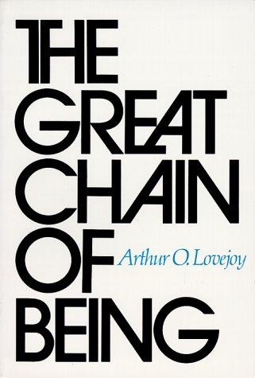
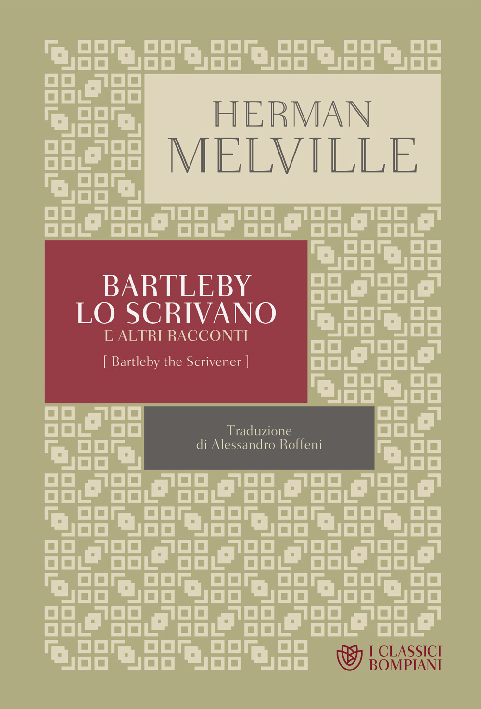
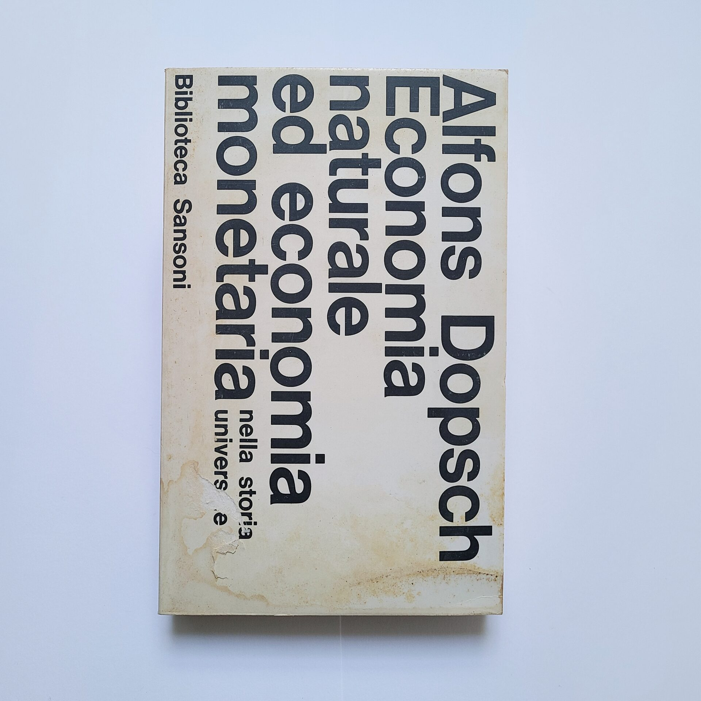

55:56 · 13 OPERE
Il peso delle idee.
Il filo del discorso
Perché parlare di libri in pubblico, se si diffida della esposizione di sé? Dr Divago dedica questo contributo alla ragione del canale e al significato che attribuisce alla circolazione delle idee. Ricorda una notte insonne di gennaio, il primo desiderio di condividere una lettura e la successiva decisione di mostrare il proprio volto per assumere la responsabilità di quanto dice.
Leggi la sintesi completaRiduci la sintesi
La autobiografia resta subordinata al problema principale: offrire contenuti capaci di modificare il rapporto di chi ascolta con il mondo, senza fare della visibilità lo scopo del discorso. La prima parte lega questa scelta alla critica della modernità. Il relatore contesta la riduzione della persona a cosa e contrappone la domanda su chi sia l’essere umano a quella su che cosa sia. Richiama Heschel, Levinas e le proprie Metafisiche del mondo. Il film Labyrinth fornisce una immagine del conoscere come liberazione: Sarah supera il potere del re dei goblin riconoscendo il proprio rapporto con lui. Dr Divago usa la scena per sostenere che il sapere può cambiare gli strumenti con cui si interpreta una situazione. Le sue generalizzazioni su università, politica, pandemia e industria culturale restano valutazioni polemiche del relatore. Al centro compare The Great Chain of Being di Arthur O. Lovejoy. Il libro sulla storia di una idea diventa il punto di partenza per una diversa immagine, quella della trasmissione riconoscente del pensiero. Chi legge riceve qualcosa da persone lontane nel tempo e può a sua volta metterlo a disposizione di altri. Socrate, Platone, Boezio, Ipazia, Bruno, Campanella, Spinoza, Simone Weil e Schweitzer sono evocati come esempi di un patrimonio umano che non si lascia ridurre alla notorietà. La serenità di fronte alla ingiustizia e la responsabilità verso gli sconosciuti sono i due caratteri morali che il relatore vorrebbe imparare da questi riferimenti. La forma delle conversazioni è parte di questa proposta. Dr Divago rifiuta la ricerca del massimo pubblico e i formati che considera troppo uniformi, come TED e PechaKucha. Difende le pause, i richiami e le digressioni perché chiedono un ascolto attivo. Bartleby e Oblomov sostengono il tema del non partecipare consapevolmente a un gioco che non si condivide. La preferenza per una conversazione lunga non costituisce però, da sola, una prova della qualità del contenuto o una misura della intelligenza del pubblico: le descrizioni dei formati e le attribuzioni antiche sono controllate nelle note. Il percorso termina con una analogia economica. Una vecchia moneta d’oro può conservare un valore anche se mutano i sistemi monetari: così, per Dr Divago, la cultura continua a offrire strumenti quando non è riconosciuta dal proprio tempo. Economia naturale ed economia monetaria di Dopsch serve a ricordare la varietà storica delle forme economiche. La immagine non dimostra che l’oro sia sparito dagli studi, né è un consiglio finanziario. Chiude la stessa richiesta da cui era nato il canale: attraversare il singolo intervento per interrogare le idee a cui rimanda, e condividere ciò che si è ricevuto senza scambiarlo per una proprietà del proprio ego.
I libri nel discorso

Il nome della rosa
Note sul riferimento
Copertina: La nave di Teseo, Oceani, 2020 · edizione illustrata
Edizione con disegni e appunti preparatori dell’autore. Nessuna edizione attribuita al video.
Il nome della rosa è nominato nella digressione sulla formula della mattina fredda di novembre; non è una nuova recensione.

Metafisiche del mondo
Note sul riferimento
Copertina: Copertina riprodotta nella recensione di Domenico Conversa
Titolo proprio Metafisiche del mondo e anno 1997 espliciti nel ragionamento sul trascendente.

Chi è l’uomo?
Identificazione probabile
Note sul riferimento
Copertina: SE, 2023
Il contributo su Heschel e la domanda chi è l’uomo: collegamento probabile all’opera già identificata, titolo non pronunciato come presentazione di un volume.

Labyrinth – Dove tutto è possibile
Note sul riferimento
Immagine promozionale ufficiale · Sony Pictures: Immagine promozionale verticale ufficiale di Sony Pictures: film Labyrinth, 1986, David Bowie e Jennifer Connelly. Grafica di catalogo successiva al film originale; non copertina di un libro o del romanzo derivato.
Grafica ufficiale del medesimo film, con Bowie, Connelly, personaggi e titolo leggibili. Non viene datata al 1986 la produzione materiale di questa grafica successiva.
Labyrinth e David Bowie sono espliciti; Sarah e la scena finale sono descritte.

Divina Commedia
Identificazione probabile
Note sul riferimento
Copertina: Giunti Barbera · Passepartout, 2021 · edizione di riferimento
Il richiamo a Dante e Ciacco è esplicito; collegamento alla Commedia, Inferno VI, senza il titolo nel parlato.

The Great Chain of Being: A Study of the History of an Idea
Note sul riferimento
Copertina: Copertina della edizione Harvard University Press identificata da ISBN 9780674361539, distribuita dal servizio OpenLibrary; ristampa dell’opera del 1936. Il titolo nero e il nome azzurro non identificano la copia Harper 1960 menzionata nel video. La data di una specifica impressione non è accertata.
Copertina autentica della stessa opera, controllata per titolo, autore e ISBN. Prima pubblicazione 1936, copia dichiarata nel video 1960, immagine Harvard di riferimento: tre informazioni distinte, senza attribuire un ISBN moderno alla prima edizione.
Arthur Lovejoy, titolo inglese e italiano, sottotitolo, prima edizione 1936 e copia del 1960 sono espliciti.

Fedone (Phaedo)
Identificazione probabile
Note sul riferimento
Copertina della raccolta The Last Days of Socrates, contenente il Fedone: Copertina della raccolta The Last Days of Socrates, Penguin Classics,29 aprile 2003,304 pagine, traduzione di Hugh Tredennick e Harold Tarrant, a cura di Tarrant. Comprende Eutifrone, Apologia, Critone e Fedone: non è una edizione autonoma del solo Fedone.
Raccolta dichiarata di quattro dialoghi, non volume autonomo del Fedone. La traduzione Perseus Harold North Fowler è una altra fonte e non viene attribuita alla copertina Penguin.
Socrate sereno mentre assume la cicuta: collegamento probabile al racconto del Fedone, titolo non pronunciato.

La consolazione della filosofia
Identificazione probabile
Note sul riferimento
Copertina: Bompiani, 2019
Boezio e la lettura della sua voce nel contesto della ingiusta condanna: collegamento probabile alla Consolazione, non un titolo esplicito.

I vestiti nuovi dell’imperatore
Identificazione probabile
Note sul riferimento
Copertina: Rizzoli, 2014 · eBook di riferimento
Il bambino che dice che il re è nudo: richiamo alla fiaba, autore e titolo non pronunciati.

Bartleby lo scrivano
Note sul riferimento
Copertina della raccolta: Bompiani · Bartleby lo scrivano e altri racconti · 2018
Copertina della raccolta Bompiani che contiene Bartleby lo scrivano. Non è presentata come copertina di un’edizione autonoma del racconto né come l’esemplare citato nel video.
Melville, Bartleby e la formula del preferire di no sono espliciti.

Oblomov
Note sul riferimento
Copertina: Einaudi · 2000
Copertina autentica controllata visivamente. Edizione di riferimento; non identifica l’esemplare usato o citato nel video.
Gončarov e Oblomov sono espliciti nel parallelo fra forme del non partecipare.

La società del contrario
Note sul riferimento
Copertina: Zambon · 2005
Copertina autentica dell’edizione di riferimento, controllata visivamente. Non identifica l’esemplare letto o citato nel video.
La società del contrario e il 2005 sono nominati dal suo autore.

Economia naturale ed economia monetaria nella storia universale
Note sul riferimento
Fotografia dell’esemplare · Sansoni 1967: Fotografia di una copia Sansoni, giugno 1967, Biblioteca Sansoni 23, 273 pagine, traduzione di Bruno Paradisi. Copertina bianca con caratteri neri disposti lateralmente; ingiallimento, macchie e uno strappo appartengono all’esemplare originale. Nessun ISBN moderno assegnato al volume.
Fotografia autentica dell’intera copertina, conservata senza ricostruzioni o ritocchi. Il disegno tipografico laterale e i segni di usura sono visibili; la corrispondenza della tiratura con la copia del relatore non è accertata.
Dopsch riconoscibile nella trascrizione automatica, titolo Economia naturale ed economia monetaria, Sansoni e anni Sessanta espliciti.